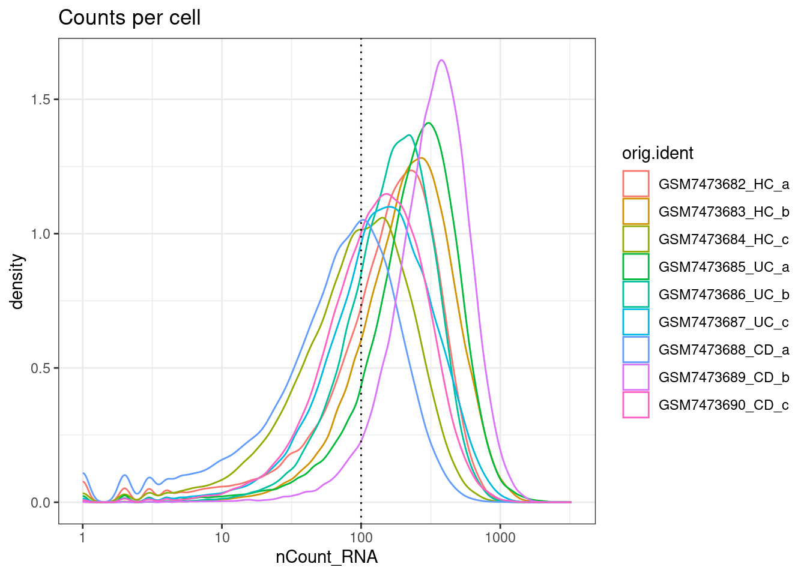
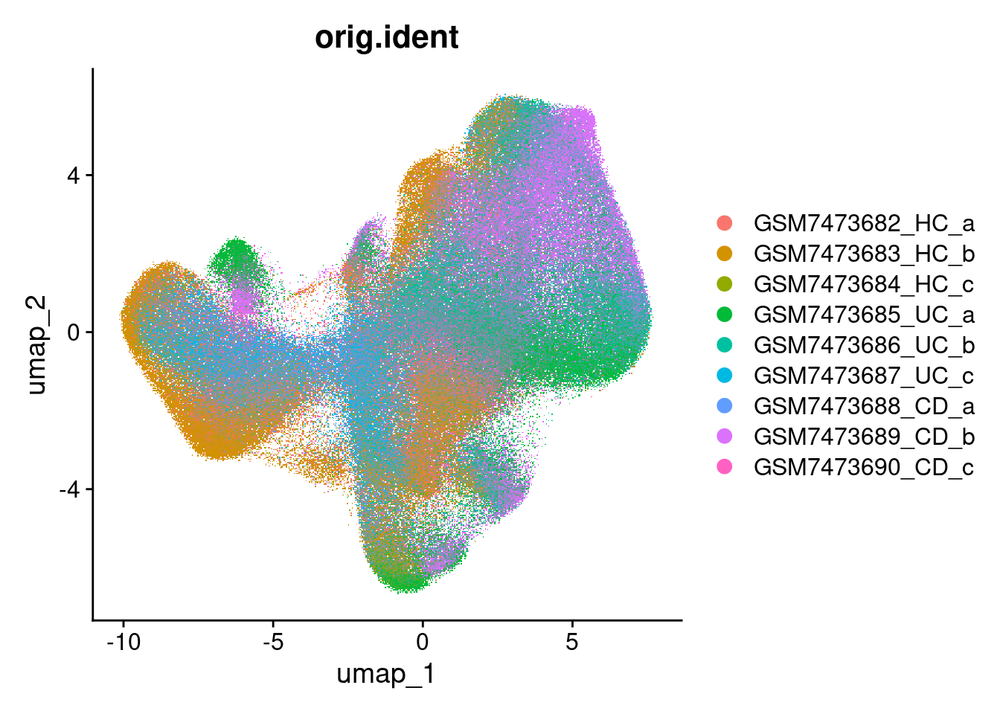
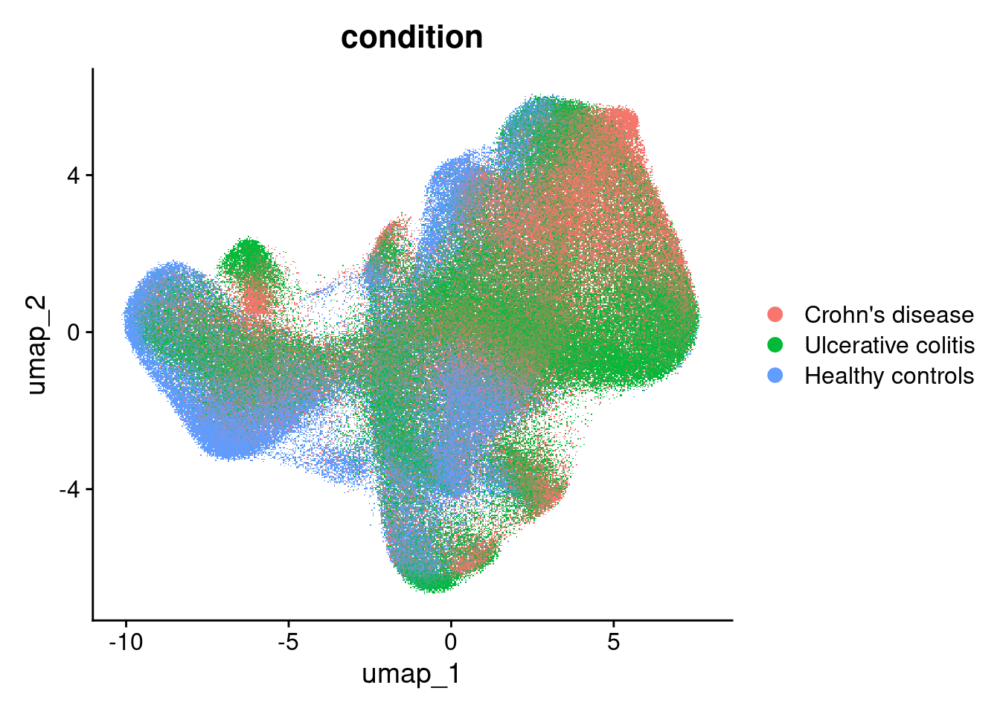
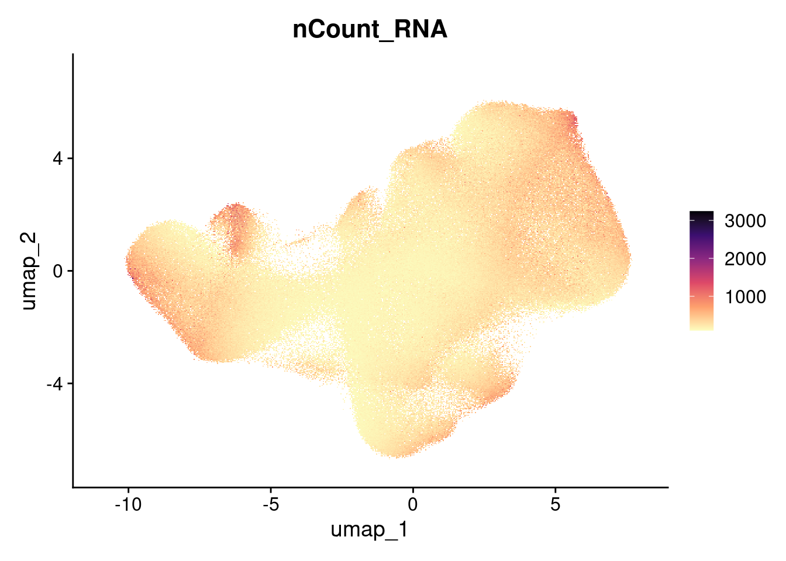

Dataset: IBD cosMX GarridoTrigo2023
Sarah Williams
Last updated: 2024-07-08
Checks: 7 0
Knit directory: spatialsnippets/
This reproducible R Markdown analysis was created with workflowr (version 1.7.1). The Checks tab describes the reproducibility checks that were applied when the results were created. The Past versions tab lists the development history.
Great! Since the R Markdown file has been committed to the Git repository, you know the exact version of the code that produced these results.
Great job! The global environment was empty. Objects defined in the global environment can affect the analysis in your R Markdown file in unknown ways. For reproduciblity it’s best to always run the code in an empty environment.
The command set.seed(20231017) was run prior to running
the code in the R Markdown file. Setting a seed ensures that any results
that rely on randomness, e.g. subsampling or permutations, are
reproducible.
Great job! Recording the operating system, R version, and package versions is critical for reproducibility.
Nice! There were no cached chunks for this analysis, so you can be confident that you successfully produced the results during this run.
Great job! Using relative paths to the files within your workflowr project makes it easier to run your code on other machines.
Great! You are using Git for version control. Tracking code development and connecting the code version to the results is critical for reproducibility.
The results in this page were generated with repository version 1993e72. See the Past versions tab to see a history of the changes made to the R Markdown and HTML files.
Note that you need to be careful to ensure that all relevant files for
the analysis have been committed to Git prior to generating the results
(you can use wflow_publish or
wflow_git_commit). workflowr only checks the R Markdown
file, but you know if there are other scripts or data files that it
depends on. Below is the status of the Git repository when the results
were generated:
Ignored files:
Ignored: .Rhistory
Ignored: .Rproj.user/
Ignored: analysis/glossary.nb.html
Ignored: renv/library/
Ignored: renv/staging/
Note that any generated files, e.g. HTML, png, CSS, etc., are not included in this status report because it is ok for generated content to have uncommitted changes.
These are the previous versions of the repository in which changes were
made to the R Markdown (analysis/d_cosmxIBD.Rmd) and HTML
(docs/d_cosmxIBD.html) files. If you’ve configured a remote
Git repository (see ?wflow_git_remote), click on the
hyperlinks in the table below to view the files as they were in that
past version.
| File | Version | Author | Date | Message |
|---|---|---|---|---|
| Rmd | 1993e72 | swbioinf | 2024-07-08 | wflow_publish("analysis/d_cosmxIBD.Rmd") |
| html | 6978154 | swbioinf | 2024-05-30 | Build site. |
| Rmd | f14901b | swbioinf | 2024-05-30 | wflow_publish(c("analysis/e_DEPseudobulk_insitu.Rmd", "analysis/e_CompositionChange.Rmd", |
| html | f2229af | swbioinf | 2024-05-07 | Build site. |
| Rmd | d6a8b2e | swbioinf | 2024-05-07 | analysis/e_CompositionChange.Rmd |
| html | a722f36 | swbioinf | 2024-04-18 | Build site. |
| Rmd | 1dc6730 | swbioinf | 2024-04-18 | wflow_publish(c("analysis/index.Rmd", "analysis/e_CompositionChange.Rmd", |
| html | 2e26929 | Sarah Williams | 2024-03-25 | Build site. |
| Rmd | 0a3a1ae | Sarah Williams | 2024-03-25 | wflow_publish("analysis/") |
| html | cf8a2ee | Sarah Williams | 2024-03-08 | Build site. |
| Rmd | 6295b7d | Sarah Williams | 2024-03-08 | wflow_publish(c("analysis/index.Rmd", "analysis/d_cosmxIBD.Rmd")) |
Data is from paper Macrophage and neutrophil heterogeneity at single-cell spatial resolution in human inflammatory bowel disease from Garrido-Trigo et al 2023, (Garrido-Trigo et al. 2023)
The study included 9 cosmx slides of colonic biopsies
- 3x HC - Healthy controls
- 3x UC - Ulcerative colitis
- 3x CD - Chrones’s disease
Fastantically - not only have they made their raw and annotated data available, but have also shared their analysis code; https://github.com/HelenaLC/CosMx-SMI-IBD
They have also shared browseable interface here: https://servidor2-ciberehd.upc.es/external/garrido/app/
Libraries
library(Seurat)Loading required package: SeuratObjectLoading required package: sp
Attaching package: 'SeuratObject'The following objects are masked from 'package:base':
intersect, tlibrary(SeuratObject)
library(tidyverse)── Attaching core tidyverse packages ──────────────────────── tidyverse 2.0.0 ──
✔ dplyr 1.1.4 ✔ readr 2.1.5
✔ forcats 1.0.0 ✔ stringr 1.5.1
✔ ggplot2 3.5.0 ✔ tibble 3.2.1
✔ lubridate 1.9.3 ✔ tidyr 1.3.1
✔ purrr 1.0.2 ── Conflicts ────────────────────────────────────────── tidyverse_conflicts() ──
✖ dplyr::filter() masks stats::filter()
✖ dplyr::lag() masks stats::lag()
ℹ Use the conflicted package (<http://conflicted.r-lib.org/>) to force all conflicts to become errorsData download
From the project description:
Raw data on GEO here; https://www.ncbi.nlm.nih.gov/geo/query/acc.cgi?acc=GSE234713
Inflammatory bowel diseases (IBDs) including ulcerative colitis (UC) and Crohn’s disease (CD) are chronic inflammatory diseases with increasing worldwide prevalence that show a perplexing heterogeneity in manifestations and response to treatment. We applied spatial transcriptomics at single-cell resolution (CosMx Spatial Molecular Imaging) to human inflamed and uninflamed intestine.
The following files were download from GEO
- GSE234713_CosMx_annotation.csv.gz
- GSE234713_CosMx_normalized_matrix.txt.gz
- GSE234713_RAW.tar: RAW data was downloaded via custom downlod in 3
batches, one per group
- GSE234713_RAW_CD.tar
- GSE234713_RAW_HC.tar
- GSE234713_RAW_UC.tar
- GSE234713_ReadMe_SMI_Data_File.html
cd raw_data
tar -xf GSE234713_RAW_CD.tar
tar -xf GSE234713_RAW_HC.tar
tar -xf GSE234713_RAW_UC.tarData load
dataset_dir <- '~/projects/spatialsnippets/datasets/'
project_data_dir <- file.path(dataset_dir,'GSE234713_IBDcosmx_GarridoTrigo2023')
sample_dir <- file.path(project_data_dir, "raw_data/")
annotation_file <- file.path(project_data_dir,"GSE234713_CosMx_annotation.csv.gz")
data_dir <- file.path(project_data_dir, "processed_data/")
seurat_file_01_loaded <- file.path(data_dir, "GSE234713_CosMx_IBD_seurat_01_loaded.RDS")
# config
min_count_per_cell <- 100
max_pc_negs <- 1.5
max_avg_neg <- 0.5
sample_codes <- c(HC="Healthy controls",UC="Ulcerative colitis",CD="Crohn's disease")Raw data
Load data
#the_sample <- 'GSM7473682_HC_a'
load_sample_into_seurat <- function(the_sample){
metadata_cols <- c("fov","Area")
sample_metadata_file <- file.path(sample_dir, paste0(the_sample,'_metadata_file.csv.gz'))
sample_mtx_file <- file.path(sample_dir, paste0(the_sample,'_exprMat_file.csv.gz'))
sample_molecules_file <- file.path(sample_dir, paste0(the_sample,'_tx_file.csv.gz'))
# NB Are only loading centroids for this data, as we dont have files <sample>-polygons.csv
# in flat files. Also do not have original images to segment on.
ns <- ReadNanostring(
data.dir = sample_dir,
mtx.file = sample_mtx_file,
metadata.file = sample_metadata_file,
molecules.file = sample_molecules_file,
segmentations.file = NULL,
metadata = metadata_cols , # Can only draw from selected feilds. So add later. Using ensures table-ness.
type="centroids"
#type = c("centroids", "segmentations") #object 'segs' not found
)
# Add the rest of the metadata
metadata_table <- read_csv(sample_metadata_file)
# Check order matches.
stopifnot(all(paste0(metadata_table$cell_ID, "_", metadata_table$fov) == ns$metadata$cell)) #im not paranoid, who's paranoid? not me.
# pull the whole of annodation in now, and shuffle column order.
ns$metadata <- cbind(ns$metadata, metadata_table[,!colnames(metadata_table) %in% metadata_cols])
ns$metadata <- ns$metadata[, c(2,1,3:ncol(ns$metadata))]
rownames(ns$metadata) <- ns$metadata$cell
cents <- CreateCentroids(ns$centroids)
#coords <- CreateFOV(coords = list("centroids" = cents), type = "centroids")
coords <- CreateFOV(coords = list("centroids" = cents), molecules = ns$pixels, assay='RNA')
so <- CreateSeuratObject(counts = ns$matrix,
meta.data = ns$metadata,
assay = 'RNA')
# Cells from counts matrix vs cells from centroid coordinates.
# Can be different (presumbably cell with zero counts?)
cells <- intersect(Cells(so),
Cells(x = coords, boundary = "centroids") )
coords <- subset(x = coords, cells = cells)
# FOV he
so[[the_sample]] <- coords
# sample info
so$orig.ident <- the_sample
so$individual_code <- factor(substr(so$orig.ident,12,16))
so$tissue_sample <- factor(substr(so$orig.ident,12,16))
so$group <- factor(substr(the_sample, 12, 13), levels=names(sample_codes))
so$condition <- factor(as.character(sample_codes[so$group]), levels=sample_codes)
so$fov_name <- paste0(so$individual_code,"_", str_pad(so$fov, 3, 'left',pad='0'))
# Put neg probes into their own assay.
neg_probes <- rownames(so)[grepl(x=rownames(so), pattern="NegPrb")]
neg_matrix <- GetAssayData(so,assay = 'RNA', layer = 'counts')[neg_probes,]
so[["negprobes"]] <- CreateAssayObject(counts = neg_matrix)
## and remove from the main one
#rna_probes <- rownames(so)[(! rownames(so) %in% neg_probes)]
#so <- so[rna_probes,]
return(so)
}samples <- c('GSM7473682_HC_a','GSM7473683_HC_b','GSM7473684_HC_c',
'GSM7473685_UC_a','GSM7473686_UC_b','GSM7473687_UC_c',
'GSM7473688_CD_a','GSM7473689_CD_b','GSM7473690_CD_c')
sample_prefix <- paste0(substr(samples, 12,15))
so.list <- lapply(FUN=load_sample_into_seurat, X=samples)Rows: 42636 Columns: 20
── Column specification ────────────────────────────────────────────────────────
Delimiter: ","
dbl (20): fov, cell_ID, Area, AspectRatio, CenterX_local_px, CenterY_local_p...
ℹ Use `spec()` to retrieve the full column specification for this data.
ℹ Specify the column types or set `show_col_types = FALSE` to quiet this message.
Rows: 54818 Columns: 20
── Column specification ────────────────────────────────────────────────────────
Delimiter: ","
dbl (20): fov, cell_ID, Area, AspectRatio, CenterX_local_px, CenterY_local_p...
ℹ Use `spec()` to retrieve the full column specification for this data.
ℹ Specify the column types or set `show_col_types = FALSE` to quiet this message.
Rows: 31340 Columns: 20
── Column specification ────────────────────────────────────────────────────────
Delimiter: ","
dbl (20): fov, cell_ID, Area, AspectRatio, CenterX_local_px, CenterY_local_p...
ℹ Use `spec()` to retrieve the full column specification for this data.
ℹ Specify the column types or set `show_col_types = FALSE` to quiet this message.
Rows: 50757 Columns: 20
── Column specification ────────────────────────────────────────────────────────
Delimiter: ","
dbl (20): fov, cell_ID, Area, AspectRatio, CenterX_local_px, CenterY_local_p...
ℹ Use `spec()` to retrieve the full column specification for this data.
ℹ Specify the column types or set `show_col_types = FALSE` to quiet this message.
Rows: 78115 Columns: 20
── Column specification ────────────────────────────────────────────────────────
Delimiter: ","
dbl (20): fov, cell_ID, Area, AspectRatio, CenterX_local_px, CenterY_local_p...
ℹ Use `spec()` to retrieve the full column specification for this data.
ℹ Specify the column types or set `show_col_types = FALSE` to quiet this message.
Rows: 57436 Columns: 20
── Column specification ────────────────────────────────────────────────────────
Delimiter: ","
dbl (20): fov, cell_ID, Area, AspectRatio, CenterX_local_px, CenterY_local_p...
ℹ Use `spec()` to retrieve the full column specification for this data.
ℹ Specify the column types or set `show_col_types = FALSE` to quiet this message.
Rows: 38779 Columns: 20
── Column specification ────────────────────────────────────────────────────────
Delimiter: ","
dbl (20): fov, cell_ID, Area, AspectRatio, CenterX_local_px, CenterY_local_p...
ℹ Use `spec()` to retrieve the full column specification for this data.
ℹ Specify the column types or set `show_col_types = FALSE` to quiet this message.
Rows: 72837 Columns: 20
── Column specification ────────────────────────────────────────────────────────
Delimiter: ","
dbl (20): fov, cell_ID, Area, AspectRatio, CenterX_local_px, CenterY_local_p...
ℹ Use `spec()` to retrieve the full column specification for this data.
ℹ Specify the column types or set `show_col_types = FALSE` to quiet this message.
Rows: 55559 Columns: 20
── Column specification ────────────────────────────────────────────────────────
Delimiter: ","
dbl (20): fov, cell_ID, Area, AspectRatio, CenterX_local_px, CenterY_local_p...
ℹ Use `spec()` to retrieve the full column specification for this data.
ℹ Specify the column types or set `show_col_types = FALSE` to quiet this message.#NB: merge is in SeuratObject packages, but must be called without ::
so.raw <- merge(so.list[[1]], y=so.list[2:length(so.list)], add.cell.ids=sample_prefix)Warning: Key 'RNA_' taken, using 'gsm7473683hcb_' insteadWarning: Key 'RNA_' taken, using 'gsm7473684hcc_' insteadWarning: Key 'RNA_' taken, using 'gsm7473685uca_' insteadWarning: Key 'RNA_' taken, using 'gsm7473686ucb_' insteadWarning: Key 'RNA_' taken, using 'gsm7473687ucc_' insteadWarning: Key 'RNA_' taken, using 'gsm7473688cda_' insteadWarning: Key 'RNA_' taken, using 'gsm7473689cdb_' insteadWarning: Key 'RNA_' taken, using 'gsm7473690cdc_' insteadrm(so.list)Negative probe handling
so.raw$pc_neg <- ( so.raw$nCount_negprobes / so.raw$nCount_RNA ) * 100
so.raw$avg_neg <- colMeans(so.raw[["negprobes"]])Pull in annotation
Most cell annotations.
anno_table <- read_csv(annotation_file)Rows: 463967 Columns: 3
── Column specification ────────────────────────────────────────────────────────
Delimiter: ","
chr (3): id, subset, SingleR2
ℹ Use `spec()` to retrieve the full column specification for this data.
ℹ Specify the column types or set `show_col_types = FALSE` to quiet this message.anno_table <- as.data.frame(anno_table)
rownames(anno_table) <- anno_table$id
head(so.raw@meta.data) orig.ident nCount_RNA nFeature_RNA Area fov cell cell_ID
HC_a_1_1 GSM7473682_HC_a 368 189 6153 1 1_1 1
HC_a_2_1 GSM7473682_HC_a 810 286 16178 1 2_1 2
HC_a_3_1 GSM7473682_HC_a 119 74 3119 1 3_1 3
HC_a_4_1 GSM7473682_HC_a 106 59 3988 1 4_1 4
HC_a_5_1 GSM7473682_HC_a 465 209 4773 1 5_1 5
HC_a_6_1 GSM7473682_HC_a 1322 441 11588 1 6_1 6
AspectRatio CenterX_local_px CenterY_local_px CenterX_global_px
HC_a_1_1 0.67 2119 3443 19274.56
HC_a_2_1 0.85 1847 3404 19002.56
HC_a_3_1 1.52 1986 3458 19141.56
HC_a_4_1 1.52 2362 3454 19517.56
HC_a_5_1 0.53 2159 3415 19314.56
HC_a_6_1 0.87 1664 3402 18819.56
CenterY_global_px Width Height Mean.MembraneStain Max.MembraneStain
HC_a_1_1 173198.6 79 118 680 2218
HC_a_2_1 173159.6 137 161 615 4453
HC_a_3_1 173213.6 79 52 989 2827
HC_a_4_1 173209.6 91 60 449 2099
HC_a_5_1 173170.6 63 118 1002 2425
HC_a_6_1 173157.6 116 134 1024 2320
Mean.PanCK Max.PanCK Mean.CD45 Max.CD45 Mean.CD3 Max.CD3 Mean.DAPI
HC_a_1_1 17170 29735 198 9639 234 1237 20
HC_a_2_1 16775 29702 222 21371 234 1520 12
HC_a_3_1 24033 29662 171 6858 298 1721 13
HC_a_4_1 13575 29651 146 935 206 1402 6
HC_a_5_1 24946 29670 299 6387 330 1443 22
HC_a_6_1 25700 29712 354 23243 328 1610 23
Max.DAPI individual_code tissue_sample group condition fov_name
HC_a_1_1 131 HC_a HC_a HC Healthy controls HC_a_001
HC_a_2_1 122 HC_a HC_a HC Healthy controls HC_a_001
HC_a_3_1 58 HC_a HC_a HC Healthy controls HC_a_001
HC_a_4_1 56 HC_a HC_a HC Healthy controls HC_a_001
HC_a_5_1 116 HC_a HC_a HC Healthy controls HC_a_001
HC_a_6_1 113 HC_a HC_a HC Healthy controls HC_a_001
nCount_negprobes nFeature_negprobes pc_neg avg_neg
HC_a_1_1 2 2 0.5434783 0.10526316
HC_a_2_1 5 3 0.6172840 0.26315789
HC_a_3_1 1 1 0.8403361 0.05263158
HC_a_4_1 0 0 0.0000000 0.00000000
HC_a_5_1 3 2 0.6451613 0.15789474
HC_a_6_1 8 5 0.6051437 0.42105263head(anno_table) id subset SingleR2
HC_c_2_1 HC_c_2_1 stroma Pericytes
HC_c_3_1 HC_c_3_1 stroma Endothelium
HC_c_4_1 HC_c_4_1 stroma Pericytes
HC_c_5_1 HC_c_5_1 epi Secretory progenitor
HC_c_7_1 HC_c_7_1 myeloids M2
HC_c_8_1 HC_c_8_1 epi Tuft cellsso.raw$full_cell_id <- as.character(rownames(so.raw@meta.data))
so.raw$celltype_subset <- factor(anno_table[so.raw$full_cell_id,]$subset)
so.raw$celltype_SingleR2 <- factor(anno_table[so.raw$full_cell_id,]$SingleR2)
so.raw$fov_name <- factor(so.raw$fov_name)
so.raw$group <- factor(so.raw$group, levels=c("CD","UC","HC"))
so.raw$condition <- factor(so.raw$condition, levels=c("Crohn's disease", 'Ulcerative colitis', 'Healthy controls'))
table(is.na(so.raw$celltype_subset))
FALSE TRUE
459145 21240 Basic QC filter
Min count per cell
ggplot(so.raw@meta.data, aes(x=nCount_RNA, col=orig.ident)) +
geom_density() +
geom_vline(xintercept = min_count_per_cell, lty=3) +
scale_x_log10() +
theme_bw() +
ggtitle("Counts per cell")
Percent Negative probes
ggplot(so.raw@meta.data, aes(x=pc_neg, col=orig.ident)) +
geom_density() +
geom_vline(xintercept = max_pc_negs, lty=3) +
scale_x_log10() +
theme_bw() +
ggtitle("Negative probe composition")Warning in scale_x_log10(): log-10 transformation introduced infinite values.Warning: Removed 227705 rows containing non-finite outside the scale range
(`stat_density()`).
ggplot(so.raw@meta.data, aes(x=avg_neg, col=orig.ident)) +
geom_density() +
geom_vline(xintercept = max_avg_neg, lty=3) +
theme_bw() +
ggtitle("Negative probe average")
Use bottom left corner;
ggplot(so.raw@meta.data, aes(y=avg_neg, x=nCount_RNA)) +
geom_point(pch=3, alpha=0.1) +
geom_hline(yintercept = max_avg_neg, lty=3) +
geom_vline(xintercept = min_count_per_cell, lty=3) +
scale_x_log10() +
theme_bw() +
ggtitle("Negative probes vs counts")
Apply filteres
From paper: “Cells with an average negative control count greater than 0.5 and less than 20 detected features were filtered out.”
Also remove cell with no cell type annotations.
so <- so.raw[ ,so.raw$nCount_RNA >= min_count_per_cell &
so.raw$avg_neg <= max_avg_neg &
!(is.na(so.raw$celltype_subset) )]Warning: Not validating FOV objectsWarning: Not validating Centroids objects
Not validating Centroids objectsWarning: Not validating FOV objects
Not validating FOV objects
Not validating FOV objectsWarning: Not validating Seurat objectsWarning: Not validating FOV objectsWarning: Not validating Centroids objects
Not validating Centroids objectsWarning: Not validating FOV objects
Not validating FOV objects
Not validating FOV objectsWarning: Not validating Seurat objectsWarning: Not validating FOV objectsWarning: Not validating Centroids objects
Not validating Centroids objectsWarning: Not validating FOV objects
Not validating FOV objects
Not validating FOV objectsWarning: Not validating Seurat objectsWarning: Not validating FOV objectsWarning: Not validating Centroids objects
Not validating Centroids objectsWarning: Not validating FOV objects
Not validating FOV objects
Not validating FOV objectsWarning: Not validating Seurat objectsWarning: Not validating FOV objectsWarning: Not validating Centroids objects
Not validating Centroids objectsWarning: Not validating FOV objects
Not validating FOV objects
Not validating FOV objectsWarning: Not validating Seurat objectsWarning: Not validating FOV objectsWarning: Not validating Centroids objects
Not validating Centroids objectsWarning: Not validating FOV objects
Not validating FOV objects
Not validating FOV objectsWarning: Not validating Seurat objectsWarning: Not validating FOV objectsWarning: Not validating Centroids objects
Not validating Centroids objectsWarning: Not validating FOV objects
Not validating FOV objects
Not validating FOV objectsWarning: Not validating Seurat objectsWarning: Not validating FOV objectsWarning: Not validating Centroids objects
Not validating Centroids objectsWarning: Not validating FOV objects
Not validating FOV objects
Not validating FOV objectsWarning: Not validating Seurat objectsWarning: Not validating FOV objectsWarning: Not validating Centroids objects
Not validating Centroids objectsWarning: Not validating FOV objects
Not validating FOV objects
Not validating FOV objectsWarning: Not validating Seurat objectsncol(so.raw)[1] 480385ncol(so)[1] 354191so <- readRDS(seurat_file_01_loaded)How many cells per sample?
table(so@meta.data$orig.ident)
GSM7473682_HC_a GSM7473683_HC_b GSM7473684_HC_c GSM7473685_UC_a GSM7473686_UC_b
30426 46203 15482 44070 60127
GSM7473687_UC_c GSM7473688_CD_a GSM7473689_CD_b GSM7473690_CD_c
38439 14579 69147 35718 Basic preprocessing
num_dims <- 15
# Run through preprocessing
so <- NormalizeData(so)
## Do per sample to mimic paper approach somewhat.
so <- FindVariableFeatures(so, nfeatures = 200)
so <- ScaleData(so) # Just 2k variable features
so <- RunPCA(so, features = VariableFeatures(so))
so <- RunUMAP(so, dims=1:num_dims)
so <- FindNeighbors(so, dims = 1:num_dims)
so <- FindClusters(so)Basic plots
UMAP
Sample
DimPlot(so, group.by = 'orig.ident')Rasterizing points since number of points exceeds 100,000.
To disable this behavior set `raster=FALSE`
Condition
DimPlot(so, group.by = 'condition')Rasterizing points since number of points exceeds 100,000.
To disable this behavior set `raster=FALSE`
Condition X Sample
DimPlot(so, group.by = 'orig.ident',split.by = "condition")Rasterizing points since number of points exceeds 100,000.
To disable this behavior set `raster=FALSE`
Total counts
FeaturePlot(so, 'nCount_RNA') + scale_colour_viridis_c(option="magma", direction = -1)Rasterizing points since number of points exceeds 100,000.
To disable this behavior set `raster=FALSE`Scale for colour is already present.
Adding another scale for colour, which will replace the existing scale.
Clustered
DimPlot(so, group.by = 'seurat_clusters')Rasterizing points since number of points exceeds 100,000.
To disable this behavior set `raster=FALSE`
celltype_subset
Classifications from Garrido-Trigo et al 2023.
DimPlot(so, group.by = 'celltype_subset')Rasterizing points since number of points exceeds 100,000.
To disable this behavior set `raster=FALSE`
Clustering
Double checking the clusters line up with annotaiaon
table(so$celltype_subset)
epi myeloids plasmas stroma tcells
82743 44006 130781 84915 11746 table(so$celltype_SingleR2)
B cell BEST4 OTOP2
5314 10155
CD4 CD8
2733 2881
Colonocytes Cycling cells
17673 2112
Cycling myeloid Cycling T cells
1287 323
Cycling TA DCs
1846 1469
DN Endothelium
608 13808
Enteroendocrine Eosinophils
852 194
Epithelium Ribhi Fibroblasts
4379 1666
FRCs GC B cell
10027 3566
gd IEL Glia
367 4353
Goblet ILC4
8864 115
Inflammatory fibroblasts Inflammatory monocytes
12593 1735
M0 M1
3001 937
M2 Macrophage NRG1
21296 9581
MAIT Mast
1233 2939
Memory B cell MT T cells
7040 175
Myofibroblasts N1
16697 556
N2 N3
433 578
Naïve B cell NK
8906 240
Paneth-like PC immediate early response
1820 9826
PC IgA PC IgA heat shock
1299 5090
PC IgA IgM PC IgG
12245 75381
Pericytes Ribhi T cells
9303 87
S1 S2a
5214 3567
S2b S3
4606 3081
Secretory progenitor T cells CCL20
34665 817
Tregs Tuft cells
2167 2489 Composition
heatmap(table(so$celltype_subset,so$celltype_SingleR2))
Save data
saveRDS(so, seurat_file_01_loaded)
sessionInfo()R version 4.3.2 (2023-10-31)
Platform: x86_64-pc-linux-gnu (64-bit)
Running under: Ubuntu 22.04.4 LTS
Matrix products: default
BLAS: /usr/lib/x86_64-linux-gnu/openblas-pthread/libblas.so.3
LAPACK: /usr/lib/x86_64-linux-gnu/openblas-pthread/libopenblasp-r0.3.20.so; LAPACK version 3.10.0
locale:
[1] LC_CTYPE=en_AU.UTF-8 LC_NUMERIC=C
[3] LC_TIME=en_AU.UTF-8 LC_COLLATE=en_AU.UTF-8
[5] LC_MONETARY=en_AU.UTF-8 LC_MESSAGES=en_AU.UTF-8
[7] LC_PAPER=en_AU.UTF-8 LC_NAME=C
[9] LC_ADDRESS=C LC_TELEPHONE=C
[11] LC_MEASUREMENT=en_AU.UTF-8 LC_IDENTIFICATION=C
time zone: Etc/UTC
tzcode source: system (glibc)
attached base packages:
[1] stats graphics grDevices datasets utils methods base
other attached packages:
[1] lubridate_1.9.3 forcats_1.0.0 stringr_1.5.1 dplyr_1.1.4
[5] purrr_1.0.2 readr_2.1.5 tidyr_1.3.1 tibble_3.2.1
[9] ggplot2_3.5.0 tidyverse_2.0.0 Seurat_5.1.0 SeuratObject_5.0.2
[13] sp_2.1-3 workflowr_1.7.1
loaded via a namespace (and not attached):
[1] RColorBrewer_1.1-3 rstudioapi_0.16.0 jsonlite_1.8.8
[4] magrittr_2.0.3 spatstat.utils_3.0-4 farver_2.1.1
[7] rmarkdown_2.26 fs_1.6.3 vctrs_0.6.5
[10] ROCR_1.0-11 spatstat.explore_3.2-7 htmltools_0.5.8.1
[13] sass_0.4.9 sctransform_0.4.1 parallelly_1.37.1
[16] KernSmooth_2.23-22 bslib_0.7.0 htmlwidgets_1.6.4
[19] ica_1.0-3 plyr_1.8.9 plotly_4.10.4
[22] zoo_1.8-12 cachem_1.0.8 whisker_0.4.1
[25] igraph_2.0.3 mime_0.12 lifecycle_1.0.4
[28] pkgconfig_2.0.3 Matrix_1.6-5 R6_2.5.1
[31] fastmap_1.1.1 fitdistrplus_1.1-11 future_1.33.2
[34] shiny_1.8.1.1 digest_0.6.35 colorspace_2.1-0
[37] patchwork_1.2.0 ps_1.7.6 rprojroot_2.0.4
[40] tensor_1.5 RSpectra_0.16-1 irlba_2.3.5.1
[43] labeling_0.4.3 progressr_0.14.0 timechange_0.3.0
[46] fansi_1.0.6 spatstat.sparse_3.0-3 httr_1.4.7
[49] polyclip_1.10-6 abind_1.4-5 compiler_4.3.2
[52] bit64_4.0.5 withr_3.0.0 fastDummies_1.7.3
[55] highr_0.10 R.utils_2.12.3 MASS_7.3-60.0.1
[58] tools_4.3.2 lmtest_0.9-40 httpuv_1.6.15
[61] future.apply_1.11.2 goftest_1.2-3 R.oo_1.26.0
[64] glue_1.7.0 callr_3.7.6 nlme_3.1-164
[67] promises_1.2.1 grid_4.3.2 Rtsne_0.17
[70] getPass_0.2-4 cluster_2.1.6 reshape2_1.4.4
[73] generics_0.1.3 gtable_0.3.4 spatstat.data_3.0-4
[76] tzdb_0.4.0 R.methodsS3_1.8.2 hms_1.1.3
[79] data.table_1.15.4 utf8_1.2.4 spatstat.geom_3.2-9
[82] RcppAnnoy_0.0.22 ggrepel_0.9.5 RANN_2.6.1
[85] pillar_1.9.0 vroom_1.6.5 spam_2.10-0
[88] RcppHNSW_0.6.0 later_1.3.2 splines_4.3.2
[91] lattice_0.22-6 bit_4.0.5 renv_1.0.5
[94] survival_3.5-8 deldir_2.0-4 tidyselect_1.2.1
[97] miniUI_0.1.1.1 pbapply_1.7-2 knitr_1.45
[100] git2r_0.33.0 gridExtra_2.3 scattermore_1.2
[103] xfun_0.43 matrixStats_1.2.0 stringi_1.8.3
[106] lazyeval_0.2.2 yaml_2.3.8 evaluate_0.23
[109] codetools_0.2-20 BiocManager_1.30.22 cli_3.6.2
[112] uwot_0.1.16 xtable_1.8-4 reticulate_1.35.0
[115] munsell_0.5.1 processx_3.8.4 jquerylib_0.1.4
[118] Rcpp_1.0.12 globals_0.16.3 spatstat.random_3.2-3
[121] png_0.1-8 parallel_4.3.2 dotCall64_1.1-1
[124] listenv_0.9.1 viridisLite_0.4.2 scales_1.3.0
[127] ggridges_0.5.6 crayon_1.5.2 leiden_0.4.3.1
[130] rlang_1.1.3 cowplot_1.1.3